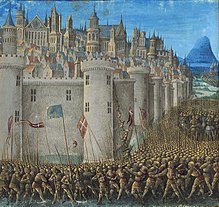
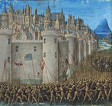
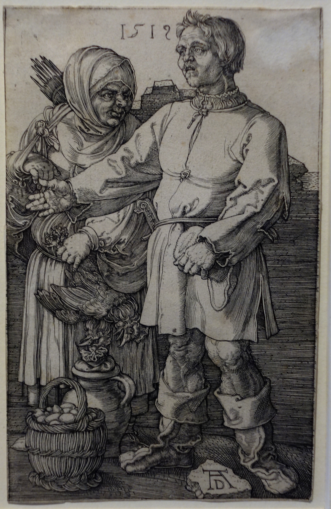
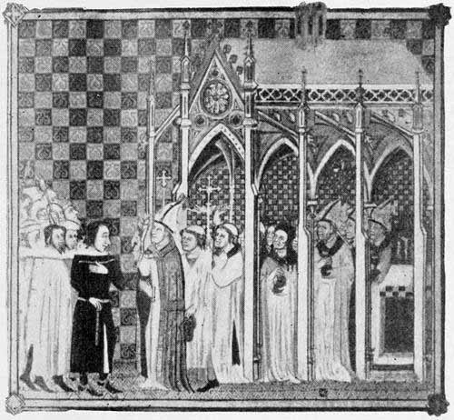
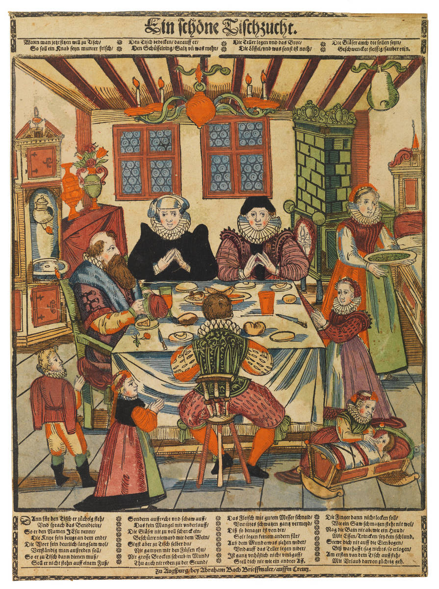

A középkor
A középkor az európai történelem hármas történelmi korfelosztásában a középső korszakot jelenti: az ókor után következő, az újkor kezdetéig tartó időszakot.
A középkor az európai történelem hármas történelmi korfelosztásában a középső korszakot jelenti: az ókor után következő, az újkor kezdetéig tartó időszakot.
A jobbágyok nem rendelkeztek se szabadsággal, se semmilyen joggal vagy kiváltsággal, és egyben a harmadik rend legnagyobb részét alkották.
A papi rendbe nem is lehetett beleszületni, a felvétel a papi rendbe szentségnek számított. Ennek a kiszolgáltatása a püspök jogosultsága volt, azonban feltételekhez nem kötötték. Ez a rendszer lehetővé tette a szimónia virágzását, majd a reneszánsz idején a pápai trónusért küzdő itáliai nemesek időnként még a család gyermek tagjait is pappá szentelték.
A nemesi rend alapvetően örökletes rend volt, amelybe annak tagjai beleszülettek. Nem nemesi származású személy felvételét a nemesi rendbe nemesi oklevél igazolta, amelyet az uralkodó (illetve annak kancelláriája) állított ki. Az oklevél egyik fontos része volt a nemesi címer, aminek használatára ettől fogva jogosult volt a nemes.

A polgárságba bekerülhettek a vagyonosodó városi lakosok és (bevándorlás után) a jobbágyok (coloni) is. Települések városi rangra emelése is hozzájárult a polgári rend bővüléséhez.
